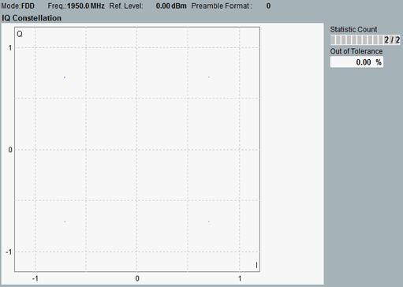

View I/Q Constellation
This single-preamble view shows the symbols as points in the I/Q plane.

I/Q constellation diagram
An NPRACH preamble signal is not modulated. So all 20 symbols are located on a single point in the I/Q plane. It would be hard to read such an I/Q diagram.
To improve the usefulness of the diagram, the measurement maps the four symbol groups to the positions of QPSK symbols. The first symbol group is on the upper right. The other symbol groups follow anti-clockwise (2nd on upper left, 3rd on lower left, 4th on lower right).
So in each QPSK position, you see the five symbols of a symbol group.
For the elements on the right, refer to "Common View Elements".